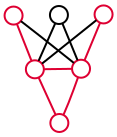

Verified Deep Learning

Deep learning has transformed the way we think of software
and what it can do.
But deep neural networks are fragile and their behaviors are often surprising.
In many settings, we need to provide formal guarantees on the safety, security, correctness, or robustness of neural networks.
This book covers foundational ideas from
formal verification and their application to
deep learning.
Neural networks and correctness
- A new beginning
- Semantics of neural networks
- Correctness properties
Constraint-based verification
- Decidable theories of first-order logic
- Decision procedures
- Encodings of neural networks
- Quantitative properties
Abstraction-based verification
- A healthy dose of abstract interpretation
- Numerical abstract domains
- Abstract interpretation of neural networks
- Abstract deep learning
Verification and reinforcement learning
- Neural networks as policies
- Verifying RL policies
- Enforcing properties via shielding
For comments, contact the
author.
Please use the following to cite this book.
@book{albarghouthi-book,
title = {Verified Deep Learning},
author = {Aws Albarghouthi},
publisher = {...},
note = {\url{...}},
year = {2020}
}
Last updated